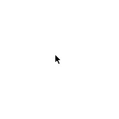

This presentation is on the history of the mouse cursor.
The design of Mac OS informs much of how we think of mouse cursors today. Their limited resolution, effected their aesthetic representation.


Cursors appear differently on different platforms.

As Screen resolution and image technology gets more advanced, we no longer need to worry about pixels and forms can become much more complicated.